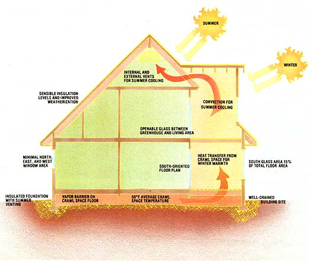
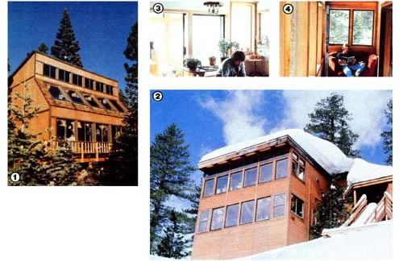

One of the originators of the controversial thermal-envelope home reaches new conclusions!
In March of 1979, MOTHER featured a story on what was at that time a rather unusual passive solar house. For instead of collecting warmth and storing it in a conventional medium, this double shelled maverick admitted insolation into a greenhouse and then routed the sun-tempered air-by convection through a vertical loop that completely surrounded the living area. During its circuit, the air gave up its heat to the mass of the inner structure . . . and then, when it had cooled, it was reintroduced to the solarium to be warmed anew.
In effect, the envelope of heated air not only tempered the living quarters, but also provided a buffer zone between the harsh outside climate and the moderate atmosphere within the house . . . while the home itself functioned as both collector and storage medium.
The structure worked, but many people-including Tom Smith, the dwelling's owner, co-designer, and the author of this article-had difficulty pinpointing exactly why. Consequently, it wasn't long before the design was called into question by individuals knowledgeable in the solar field. But by the same token, proponents of the "cause" were equally ready to defend double-shell architecture, and did so. In the meantime, various hybrid designs rooted in the envelope theme were unveiled, and they, too, functioned well.
While all this was going on, though, Smith merely observed quietly . . . and then got busy working out the modified structure shown in the photos, based on the knowledge he'd gained in the several-year interim. Since Tom was one of the first to promote the original double envelope concept, we think it only fair to give him an opportunity to explain what his new design is all about . . . and why it differs from t he old one.
I've had a tiger by the tail ever since my "thermal envelope" home appeared in THE Mother Earth News'!' over four years ago . . . and to me it's ironic that what was intended to be an expression of simplicity turned instead into a source of confusion and controversy!
Those not familiar with the course of events should know that a lot of people initially thought my double-shelled house wouldn't work. Then, when the house itself proved otherwise, folks agreed that it indeed worked, but no one could figure out exactly why. Finally, the solar "experts" got into the discussion. As a result, the theories and research became more sophisticated . . . but the obvious seemed to become more obscure. The field even polarized into camps of advocates and critics!
The way I see it, though, while people were busy choosing up sides to decide whether the double envelope was the answer, many of us may have forgotten the question. So, after all these years, I'd like to get a word in.
As I suggested back in MOTHER NO. 56, the real question has always concerned the simplest way to achieve energy-efficient architecture. In practice, this usually involves eliminating things intelligently rather than adding them on indiscriminately. Progress, then, should imply an advancement beyond the double envelope to a less complicated design. In fact, it should entail a farewell to all the landmark systems typical of the pioneering days of passive solar construction. Rather than consider those prototype discoveries as carved in stone, we should use them as building blocks for future, more effective, models.
In my own current generation of "envelope descendants", the cumbersome double north wall has been totally eliminated, and -in most instances-the double roof has been jettisoned, as well. Moreover, I've carefully avoided borrowing from other systems to make a new hybrid, because this practice is usually an exercise in overkill . . . or is tantamount to adding apples and oranges.
True, the attached greenhouse and insulated stem wall foundation of the previous design still exist, but not so the convective loop or even the double envelope! What remains, then, is kin only by virtue of its Smith house "ancestry".
Of course, before I could improve (read "simplify") the original envelope design, I first had to understand exactly what was going on inside it. Unfortunately, attempts to calculate the performance of the house in solar terms proved woefully inadequate, and in fact, the classic solar math showed that the structure couldn't possibly work because there were no concentrated volumes of thermal mass present in which to store solar gain.
Fortunately, no one mentioned this fact to the hundreds of different envelope houses across the nation, so they continued to happily save energy regardless. But if the design wasn't operating according to the principles of passive solar science, what indeed was it doing?
Although a lot of attention was given to the efficacy of the convective loop and its derivatives (owing, in part, to the publicity my Lake Tahoe home received), I became less convinced about that component's importance as time went on. Of course, the next most obvious explanation for the success of the design was the idea that the combined R-values of the inner and outer shell in conjunction with the buffering air space between amounted to super insulation. That solution was admittedly appealing, but it somehow seemed too obvious.
In the winter of 1979, I got my first real clue that the super-insulation premise didn't exactly add up. Upon returning to my Sierra Nevada home late in the evening after several days of travel, I was astounded to find-from my recording thermometers that the greenhouse temperatures had stayed in the mid-40's . . . despite the fact that I'd been gone during a particularly in clement spell with negligible sunshine and continuous temperatures in the 0°F to 30°F range!
Now if these surprisingly warm temperatures had been recorded within the main living area, I could have credited the insulating effect of the home's double shell. But this was inside the greenhouse, an area that incorporated the very antithesis of thermal protection: 390 square feet of minimal resistance glass (with aluminum framing, no less), noticeable infiltration, and an exposure to southwesterly winds that rip right across the glazing's entire expanse. By rights, I should have found ice on the windowsills!
That experience prompted some real thought on my part. At first, I was stumped: The only apparent source of energy within the entire house was the intrinsic heat of the refrigerator, the water heater, and a night light . . . certainly not enough to maintain a 45 ° environment. But then I _ realized that I'd been ignoring one fact all along: The earth temperatures in the crawl space beneath the house remained constant -at about 50 °Regardless of what was happening elsewhere. Like smoke rising skyward, the earth was giving up its warmth whenever the home's air temperatures dropped below the surface temperatures in that sub floor area . . . and the faster heat was lost to the outside, the more rapid that transfer occurred.
In effect, then, the earth under the house serves as a "thermal brake" to decelerate winter's harshest impact. Sure, a 45 °F greenhouse environment isn't exactly a short sleeve climate (one reason it's easily overlooked as an energy-saving factor), but its role in retarding heat loss is significant. The total depletion from the inner house is noticeably reduced because the temperature differential between warm and cold areas is substantially narrowed.
For example, if a 65 °F bedroom environment is exposed to the 45 °F temperature of an adjacent greenhouse rather than to the bone-chilling 5 °F weather outside, the heat loss from the interior is decreased two thirds .. . a figure worth striving for in any design.
Now obviously, this impeded transfer isn't occurring at all the structure's walls because not all of them face the temperate, earth linked greenhouse. But the crux of the matter is that this thermal cushion is present on the most critical face . . . the glass-covered south wall (the one that introduces warmth throughout the day, but snatches it away-with interest-at night). Thus, the greenhouse-earth connection offers the passive solar and aesthetic benefits of south wall glazing without the enormous disadvantage of unchecked heat loss.
The earth's ability to temper a sheltered environment is caused by several factors, which, in turn, ultimately affect the envelope home's performance. First, daily solar gain, coupled with the absorption of excess heat from the house, contributes-in increments-to the thermal store in the soil over the long winter haul. Second, seasonal lag, the phenomenon by which the heat of the spring and summer is soaked up in the earth for release during cold weather, plays a major role in keeping the ground temperature up (especially during the early winter). Finally, this relative warmth remains under the structure because its insulated foundation and walls provide protection from both long- and short-term heat losses.
In all fairness, although the relationship between solar energy and the earth's warmth is important to the system's function, other design factors which can't be ignored are also involved in the home:
[1] The living area is zoned from the greenhouse during the night, resulting in reduced heat losses from the inner house.
[2] Fewer faces are in direct contact with the outside than in conventional structures, which normally have six outer surfaces exposed.
[3] Since the design emphasizes south glazing, only a minimum of north, east, and west glass faces the outdoors . . . resulting in less infiltration, fewer cold surfaces, and less conductive heat loss than that experienced in typical houses.
[4] The surfaces, structural members, and furniture in the building absorb excess solar heat, thus raising the home's mean radiant temperature.
[5] Because there's a natural tendency for residents to line up main living areas along the well-lit greenhouse, the floor plan often includes buffer zones-consisting of closets, pantries, utility rooms, and the like-along the three outer walls.
In some ways, the approach I'm talking about may seem fairly ordinary, but its implications are not. By making irrelevant many of the design problems that have concerned so many people over the past few years, we can just eliminate those trouble spots and move on to an simpler plan. In summary, many of the features which typified the classic double-envelope structure simply are no longer necessary, and it's now easy to understand why. To begin, the double north wall just isn't worth the extra building effort and expense it incurs. On one house I did, the inclusion of that second surface would have saved about 300 BTU per hour worth of energy .. . roughly equivalent to the heat given off by the family's pets. Attention to tight construction and the minimal use of windows on that wall will deliver performance nearly equivalent to that of the double-skin designs.
The double roof is superfluous for similar reasons, especially since you can use less exotic options. Occasionally, in locations with extremely hot summers, it will pay to incorporate a top inner layer . . . if the desired architecture lends itself to simple shell construction (as is often the case with attics and the air spaces of a gable roof). In these instances, though, improved cooling is the goal. The high summer sun will heat the outer roof, creating convective currents in the air space that draw excess solar and intrinsic heat from the structure through ceiling vents.
Overkill on the south wall is also a mistake. The obsessive concern for plenty of angled, south-facing glass that has generally characterized passive design just isn't warranted in a simplified earth-coupled structure . . . because we're not worried about trying to heat tons of absorptive thermal mass. A bit of excess isolation is certainly welcome, but a ratio of 6:1 or 7:1 total floor area to south glass area is quite ample in most instances.
And I see no need to develop hybrid designs based on thermal mass or super insulation. The house works without these additions, so the money spent on them could be put to better use in tight construction, weathernization, or improved distribution of available heat.
True, my updated design is only a beginning, but it's a step in the right direction. There still exist many things to explore, and there are yet a number of unanswered and pertinent-questions. But the important thing now is that we all move on to the next generation of passive design with a bit less excess baggage . . . recognizing as we go that progress is nothing more than the elimination of things unnecessary.
EDITOR'S NOTE: Tom Smith has compiled an updated portfolio, which includes many different house designs, floor plans, and detailed explanations. It's available for $70 from Tom Smith, Dept. TMEN, P.O. Box 6887, Tahoe City, California 95730. He's also designed a new prototype Cape Cod-style house that incorporates state-of-the-art features. Complete construction drawings and schematics are included in a 10-page blueprint set, and they're available-for $35 from the address above.
The following list of do's and don'ts should help highlight the most common considerations involved in the design of a simplified energy efficient structure. Obviously, because of the endless variety of situations encountered in the field, these points are only general guidelines . . . but they should aid in the understanding of the total concept.
[1] Insulate the foundation to a depth of one foot below the frost line to a value of approximately R6. A continuous, draft free layer is most effective. Be sure to use a water-resistant material (extruded polystyrene, jot example), and take care to protect it from the deteriorating effects of sunlight above grade by using stucco or surface bonding cement.
[2] install foundation vents with insulated shutters along the north wall, using the rule that you'll need one square foot of vents to every eight linear feet of that wall's surface. These should be opened in the summer for cooling.
[3J Put a six-millimeter polyethylene vapor barrier an the surface of the crawl space floor and cover it with two inches of clean sand. This will prevent moisture from being drawn up through the ground and condensing on the greenhouse glass.
[4J Provide for effective drainage around the house by using gutters, landscaping that encourages runoff, drain networks, or any other standard means . . . but be sure it works. Otherwise, water moving through the ground under the house will remove accumulated heat.
[5] Design the south wall with a glass area roughly equal to 75% of the total floor space. Vertical standard glass is fine. Angled glazing can be used for aesthetic purposes if desired . . . but avoid leaning the glass back at an angle greater than 45°.
(6J Minimize east, west, and north windows, both in number and size. If you must sacrifice this rule for a view, compensate by using highly insulated glass or thermal shutters at these openings.
[7J Consider using large amounts of openable glass between the greenhouse and the living area's south wall . . . for both improved air distribution and aesthetic purposes. [8J Utilize a ceiling fan in the greenhouse to force stratified heat downward and into the living space, where it will be absorbed by surrounding surfaces.
[1] Don't bother to put more heat into the crawl space earth by mechanical means or by the use of a convective look. Any excess will only be lost to the outside at night through the greenhouse glass.
[2J It's probably not cost-effective to exceed R19 insulation levels in the walls. It's better to spend any extra effort on righter construction, improved weathernization, upgraded glazing, and better distribution of available heat.
[3J Storing excess hear in thermal-mass fixtures within the greenhouse is unnecessary. Since much of that warmth will be lost through the glass on cold nights, concentrate instead on moving the heat around to other parts of the house.
[4J Don't connect the insulated stem wall foundation with outside masonry such as garage floor slabs and doorsteps. Those additions will just act like huge cooling fins to draw crawl space warmth out into the harsh winter environment.
[5] Don't forget to provide proper summer ventilation by installing operable vents high in the greenhouse. Similar openings in the main structure also allow internal heat to escape.
|
 [1] Tom Smith's original thermal-envelope home, completed in 1977, provided some new insight into the double-shell controversy. [2] Steve and Tamara McKinney's dwelling in Squaw Valley, California exemplifies Smith's evolved design. It has an attached solarium and earth-coupled foundation, but no envelope, super insulation, or excess thermal mass. [3] The living area is oriented to the south, and is tempered by . . . [4] this cozy sunspace, which is linked to the insulated crawl space beneath the structure. |
 |
|